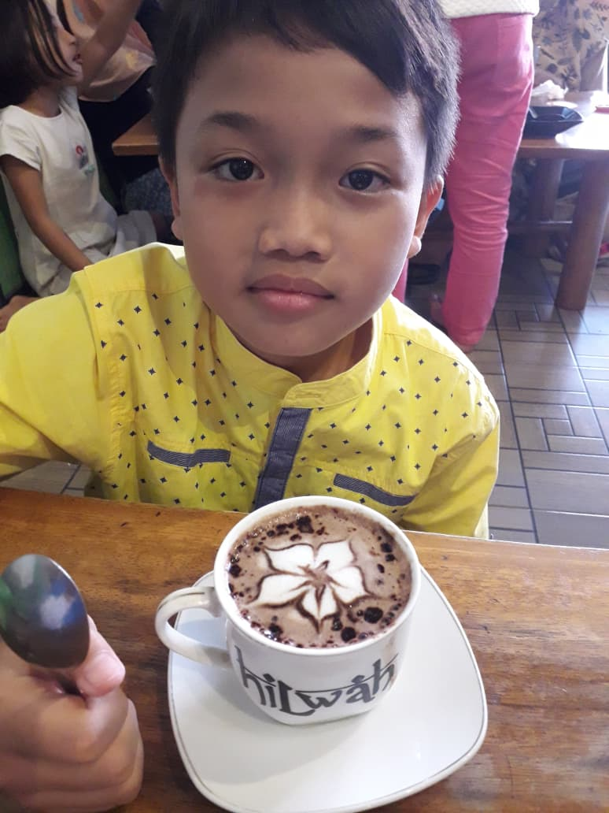

BIODATA DIRI MAHASISWASelamat datang di halaman profil pribadi saya |
|||||||||||
|

Status: Mahasiswa Aktif
Fakultas: Ilmu Komputer Universitas: Universitas Kuningan |
Informasi Pribadi
Tentang SayaSaya adalah seorang mahasiswa semester 3 yang memiliki ketertarikan tinggi pada pengembangan aplikasi web, analisis sistem, serta desain antarmuka pengguna karena saya mahasiswa Sistem Informasi. Saya selalu bersemangat mempelajari teknologi baru dan merancang solusi digital. |
||||||||||
|
Tautan |
|||||||||||
|
© 2026 Tugas Desain Web - Universitas Kuningan |
|||||||||||